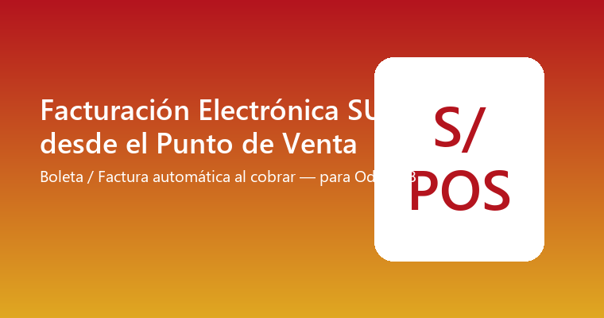

Cada venta del Punto de Venta queda con un comprobante electrónico válido ante SUNAT: Boleta cuando el cliente no tiene RUC (incluido un cliente genérico configurable para ventas sin identificar), o Factura cuando sí lo tiene — con el diario/serie correcto elegido automáticamente y enviado a SUNAT en el mismo momento del cobro.
Requiere el módulo Perú - Facturación Electrónica SUNAT (Conexión Directa) instalado y configurado: reutiliza por completo su firma digital y envío SOAP ya probados en vivo — este módulo no agrega un segundo camino de envío, solo conecta el Punto de Venta al que ya existe.